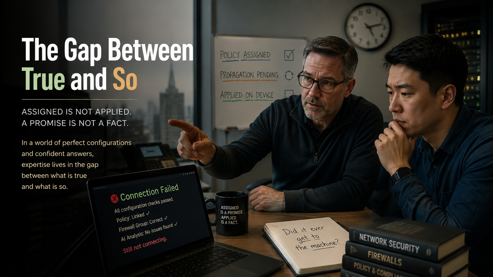

The Gap Between True and So
A field note on how expertise is actually made, and what happens to a field that automates away the work that makes it. Companion to SI-WP-011.

It is not even late. That is the part people get wrong about how this actually goes. It is half past two in the afternoon, and a guy visiting from the China subsidiary is sitting at a borrowed desk on our floor, trying to reach his own machine back home, and it will not connect.
Daniel has the ticket. He is good, and I want to be clear about that, because the story does not work if he is a fool. He is not a fool. He has done it correctly. The policy that grants the remote access has been linked to the right place; he confirms that himself, he shows me the link. The visiting machine’s address has been added to the firewall group the policy requires; he confirms that too, he has the group membership open on the screen. Two things had to be true, and both of them are true. He has checked the work, and the AI has checked the work, and they agree: this should connect. The model is confident. Daniel is confident. The configuration is, in fact, correct.
And it does not connect.
So now he is somewhere worse than stuck. He is stuck while being right, which is the hardest place to get a smart person out of, because every instinct he has and every instinct the machine has is to look harder at the things that are already confirmed. He re-reads the policy. He re-checks the firewall group. He asks the model whether there is a second policy that could be overriding this one, which is a genuinely intelligent question, and the model gives him a genuinely intelligent answer about precedence and link order, and all of it is downstream of an assumption nobody in the conversation has noticed they are making.
I am not looking at any of that. I ask him one thing. Did it ever get to the machine.
And he does not understand the question. That is not a knock on him. It is the whole thing in one moment, because the question does not parse if you grew up thinking of a policy as a setting. He is hearing me ask whether the policy exists. It does. That is not what I asked. I asked whether this physical box, the one that man in China is trying to reach, has actually pulled the policy down and become a machine that obeys it, or whether it is still, right now, the machine it was yesterday, faithfully enforcing a world in which none of this was ever configured.
Have him force the update, I tell him. Then reboot it.
The box goes down, comes back up having finally caught up with its own paperwork, and it connects on the first try. Total elapsed time, once you know: ninety seconds. The thirty years is not in the fix. The fix is one command a second-week tech could type. The thirty years is in walking up to a system that every readable signal says is correct and asking the one question that lives in the gap between a thing being true and a thing being so.
What actually closed the ticket
I have told versions of that story for a while, and people usually file it under war stories from a guy who has been around. I think it is something more specific, and I have spent the last stretch of my working life trying to write down exactly what. It is the cleanest example I know of a failure that is about to happen quietly, across a whole category of professional work, and the half-past-two afternoon is the key to all of it.
Start with what actually resolved that ticket, and be precise, because the imprecise version is comforting and wrong.
It was not that the human was smarter than the machine. Daniel is smart, the model is capable, and on the visible facts both were correct. The policy was linked. The firewall group was right. The model’s reasoning about precedence was sound. Everyone in the room was right about everything that could be read.
What resolved it was that one person had a distinction the others did not have, and could not have gotten by looking harder at the screen. Assigned is not applied. A promise is not a fact. That is not a piece of information you can retrieve. It is not a row missing from a table that someone forgot to fill in. It is a way of seeing, and the only way to get it is to have been burned, more than once, by the difference between a system that has been told what to do and a system that has actually done it. You cannot feed that to the model as a document, because every document in the building says the configuration is correct, and every document is right. The gap is not in the documents. The gap is in the world, between the paperwork and the machine, and you only learn to look there by having once trusted the paperwork and been wrong.
There is a second thing that makes it hard, and it is the same thing every time. The model is built to explain and to act. Faced with an anomaly, it reaches for a resolution, and on that afternoon every resolution it reached for was a deeper inspection of the things that were already true. “Stop looking at what is configured and go ask whether the box ever heard about it” is not a more sophisticated version of the same search. It is a step out of the search, and a system built to search will take that step last, if it takes it at all.
How a person becomes the one you call
Here is the part nobody puts on a dashboard.
I did not start out as the person who asks whether the box ever heard about the policy. I started in 1991 with two floppy drives and no idea what I was doing. No Windows, just DOS. I broke things. I trusted the paperwork and got burned, more than once, and over thirty-five years the breaking and the getting-burned slowly turned into the distinction I handed Daniel in ten seconds.
That arc has a shape, and the shape has two parts we constantly mistake for one.
There are the people who can do the work today. The seniors, the ones who get called. Think of them as a stock, an inventory of formed judgment that a firm can reach for when the readable signals run out.
And there is the thing that makes those people: the lower-stakes, formative, often unglamorous work where a newcomer does the task, trusts the wrong thing, gets corrected, and over years builds the distinctions that no document contains. Call it the flow. It is not a cost center that happens to also train people. It is the training. It is the only way the stock ever gets refilled, because the only way to learn that assigned is not applied is to once believe that it was.
Daniel’s afternoon is what the handoff from flow to stock looks like when it is working. He did the work. He hit the wall while being right. He called the distinction he did not yet have. Run that loop a few thousand times over twenty years and Daniel becomes the person on the other end of the phone, and some newcomer we have not hired yet calls him when a true thing refuses to be a real one.
Now sever the flow, and watch what happens, because what happens is the entire problem.
Why the dashboard is the last thing to know
Hand the formative work to the machine, and for a long time nothing breaks.
This is what makes it dangerous instead of merely sad. The work still gets done, and gets done well, because the stock is still there. The seniors who came up the old way still ask the question that lives in the gap. Output holds. Resolution times hold. The org chart is full. Every present-tense number a firm watches reads healthy, often healthier, because the model is making the existing experts faster.
And every one of those numbers is measuring the people the problem has not reached yet.
The metrics are supplied by the stock, and the stock is precisely the variable the severance does not touch, right up until it retires. So the dashboard stays green for years, not because nothing is wrong, but because the thing that is wrong is happening to a generation that has not arrived. The signal that something has gone hollow cannot appear in present output, because present output is the one place the failure structurally cannot show.
Then the stock retires. The firm reaches for the bench, the next generation meant to step into the stuck-while-being-right seat, and finds people who can drive the model beautifully and have never once had to step outside the readable signals, because for their entire career the model did the reading and they did the confirming. The seats are full. Headcount is fine. And the first afternoon a true thing refuses to be a real one after the last formed senior walks out, there is no one who knows to ask, and the smart, confident, correct-on-every-visible-fact answer ships, and they find out later what it cost.
The objections, because they are good ones
When I say this out loud I get pushback, and the strongest of it is right enough to take seriously.
“This is just Luddite panic. We have automated junior work for decades and survived.” True. The calculator killed arithmetic drill. The compiler killed hand-translated machine code. Every time, someone forecast the death of a craft, and every time the craft was fine. So why is this different? Because most automation moves the formative work rather than removing it. The calculator took the drill and left problem-setting, which is harder and more formative, and made it more central. There was still a rung to climb. The question is never whether the machine does junior work. It is whether it leaves new formative work behind, or simply deletes the rung. A tool is safe if a newcomer can still do something lower-stakes than the senior job, consequential enough to form real judgment, performed before they see the machine’s answer, and connected to the judgment the senior seat needs. It is dangerous when all that remains for the junior is to confirm output they could not have produced and would not know was wrong. Daniel confirming the model’s correct-looking configuration is exactly that. He could not have caught it by confirming. Only the distinction caught it, and the distinction is built by producing, not by checking.
“Then just hire experienced people.” From where? That works for a single firm drawing on a deep outside pool. It fails when the whole field formed the same hollow way, because then there is no pool, only people downstream of the same severance. And a market does not price a shortage it cannot see, so the correction arrives the way the stuck-while-right ticket would have, had no one known to ask: too late, after it has already cost something.
“The model will get good enough that you do not need the senior at all.” Maybe, someday, in some domains. But that is a bet specifically about the hard cases, the moments where the readable signals are all correct and the answer lives outside them. If you are certain the machine never meets one of those unaided, then you do not need the human seat, and you should say so plainly, because much of the case for keeping humans in the loop assumes you do. You cannot have it both ways. And even granting you need far fewer experts than before, you still need some, at the hardest cases, and that smaller tier still has to be made. Better models shrink the bench you need. They do not build it. The mechanism that would have formed the last few experts is the exact thing that got cut.
What to actually do, and the field that already did it
This is not a plea to slow the machine down. It is a plea to measure the right thing.
Stop watching present output, which is the one number the failure leaves untouched, and start watching formation. Not “is the junior productive,” because a junior can be enormously productive confirming the model and learning none of the distinctions that let you step outside it. Watch whether they are becoming people who can do the work when the tool is gone or wrong. Those two things look identical for years and then diverge all at once, and only one of them is the thing you actually need at half past two on a bad afternoon.
The most concrete fix costs almost nothing: keep an unaided phase in entry-level work. Make the newcomer form their own read first, commit to it, and then hand it to the model and compare. Same tools, same work, different order, and the order is the whole thing. The junior who produces first and checks second is building distinctions. The junior who only ever checks is building nothing, and you will not learn which you made until the afternoon you need one and have the other.
If that sounds deliberate and expensive and against every efficiency instinct, it is, and one field has paid that price on purpose for a century. Medicine did not keep its pipeline by luck. It built residency, simulation, supervised progression, and board certification, and it spends enormous sums to run a trainee through real but supervised cases before handing over the unaided one. A surgical resident is doing exactly the protected formative work I am describing: lower-risk than operating alone, consequential enough to form judgment, done before they are on their own, connected straight to the competence the senior role requires. Medicine is not the field where this problem fails to apply. It is the field that built an expensive defense against it on purpose, which is the proof both that the defense is payable and that it costs a fortune.
Most professional knowledge work, the software and the systems and the data and the analysis, has built no such thing. And it has no reason to, because the dashboard is green, and will stay green right until the afternoon it is not.
One more thing, about who is telling you this
I am a theorist, not an empiricist. I did not run a study. I built a structural argument on work other people measured, and I have written down, plainly, what would prove me wrong.
I am also not claiming the severance is already happening at scale. That is genuinely contested, the data is mixed, and I am not going to pretend otherwise. What I am claiming is the structure: what follows if the flow is being cut, why you would not see it in time, and what you would have to measure to catch it before the bench is empty rather than after. Daniel’s afternoon is not proof that the field is hollowing out. It is proof of what the seat is for, and what fills it, and what does not. The distinction that closed that ticket was not a memory of a past disaster I happened to keep. It was formed judgment, built rung by rung, the kind of thing that only exists because someone did the lower work first, unaided, and learned where the world and the paperwork come apart.
I spent over twenty-five years at firms where a system failing cost real money and someone senior had to actually know how things worked: Goldman Sachs, Russell Investments, the Abu Dhabi Investment Authority, and Elliott. No AI lab pays me. No vendor funds this. I have nothing to sell and no quarterly narrative to protect, which is most of the reason I can say this out loud while the people closer to the money cannot.
I can still do this work without the AI, because I learned it before the AI existed. I built the distinction the hard way so I could hand it to Daniel in ten seconds. The question that keeps me up is not about Daniel. He is going to be fine; he is being formed. It is about whoever Daniel is supposed to help, twenty years from now, on the afternoon a true thing refuses to become a real one, when every signal reads correct and the model says look harder and there is no one left in the building who knows to ask whether it ever got to the machine.
Further reading
The full argument, with the formal stock-and-flow model, the restoration-window inequality, the verification-versus-production hinge, and the complete set of conditions under which the whole thing is wrong, is in the white paper:
- SI-WP-011: The Seat Without the Bench — the precondition the non-removability prescription presupposes: who will be capable of filling the seat a field works to preserve, and why a severed formation pathway stays invisible until the bench is reached. The paper page links to the permanent DOI on Zenodo.